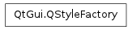

QStyleFactory ¶

Detailed Description ¶
The PySide.QtGui.QStyleFactory class creates PySide.QtGui.QStyle objects.
The PySide.QtGui.QStyle class is an abstract base class that encapsulates the look and feel of a GUI. PySide.QtGui.QStyleFactory creates a PySide.QtGui.QStyle object using the PySide.QtGui.QStyleFactory.create() function and a key identifying the style. The styles are either built-in or dynamically loaded from a style plugin (see QStylePlugin ).
The valid keys can be retrieved using the PySide.QtGui.QStyleFactory.keys() function. Typically they include “windows”, “motif”, “cde”, “plastique” and “cleanlooks”. Depending on the platform, “windowsxp”, “windowsvista” and “macintosh” may be available. Note that keys are case insensitive.
See also
- class PySide.QtGui. QStyleFactory ¶
- static PySide.QtGui.QStyleFactory. create ( arg__1 ) ¶
-
Parameters: arg__1 – unicode Return type: PySide.QtGui.QStyle Creates and returns a PySide.QtGui.QStyle object that matches the given key , or returns 0 if no matching style is found.
Both built-in styles and styles from style plugins are queried for a matching style.
Note
The keys used are case insensitive.
See also
- static PySide.QtGui.QStyleFactory. keys ( ) ¶
-
Return type: list of strings Returns the list of valid keys, i.e. the keys this factory can create styles for.
See also